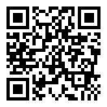

La plupart des ordinateurs ne disposent pas des capteurs requis. Scannez le code QR pour continuer sur votre appareil mobile.

Qu'est-ce qu'un niveau à bulle ?
Un niveau à bulle est un outil utilisé pour vérifier si une surface est parfaitement horizontale (de niveau) ou verticale (d'aplomb). C'est un outil essentiel pour la construction, la menuiserie et le bricolage.
Un niveau à bulle traditionnel a une petite fiole en verre avec une bulle à l'intérieur. Si la bulle est centrée entre les lignes, la surface est de niveau. Ce niveau à bulle en ligne utilise les capteurs de votre téléphone pour faire la même chose, mais avec une précision numérique.
Comment utiliser ce niveau à bulle en ligne
Ce niveau à bulle en ligne transforme votre téléphone en un niveau à bulle de précision. Il utilise les capteurs intégrés de votre appareil pour vérifier si une surface est de niveau. Aucune installation d'application n'est nécessaire - il fonctionne directement dans votre navigateur.
Caractéristiques principales
Mesures instantanées : Obtenez des lectures d'angle en temps réel dès que vous placez votre téléphone sur une surface.
Deux modes : Utilisez le 'Mode Surface' pour les surfaces planes et le 'Mode Mur' pour les surfaces verticales.
Interface simple : La bulle virtuelle fournit un guide visuel clair, tout comme un vrai niveau à bulle.
Bouton Zéro : Calibrez le niveau sur n'importe quelle surface ou pour tenir compte d'un relief de l'appareil photo.
Alertes audio : Recevez un bip sonore lorsqu'une surface est parfaitement de niveau.
Une note sur la précision
Bien que ce niveau en ligne soit idéal pour la plupart des tâches de bricolage, il ne remplace pas un niveau à bulle professionnel et calibré. La précision dépend des capteurs de votre téléphone, et de petites bosses peuvent affecter la lecture. Pour de meilleurs résultats, utilisez les techniques de calibrage décrites ci-dessous.
Comprendre les composants
Ce niveau à bulle en ligne a deux modes principaux : Surface et Mur. Voici un guide rapide des composants de chaque mode.
Mode Surface
Cadran circulaire : Un niveau circulaire qui indique l'angle de la surface dans toutes les directions.
Bulle principale : La bulle dans le cadran circulaire. Lorsqu'elle est au centre, votre surface est de niveau.
Niveaux vertical et horizontal : Deux niveaux rectangulaires qui indiquent les angles de tangage (d'avant en arrière) et de roulis (de gauche à droite).
Affichage des degrés : Affiche l'angle exact de la surface en degrés.
Éléments en mode Mur
Boîtier de niveau mural : Une interface de niveau à bulle classique pour vérifier les surfaces verticales.
Bulle murale : La bulle dans le niveau mural. Centrez-la entre les lignes pour trouver l'angle vertical parfait.
Degré mural : Affiche l'angle vertical exact en degrés.
Comment niveler une surface avec le niveau à bulle en ligne ?
Sélectionnez le mode 'Surface' : Assurez-vous que le bouton 'Surface' est actif dans le sélecteur de mode.
Placez l'appareil : Posez votre smartphone ou votre tablette à plat sur la surface que vous souhaitez mesurer.
Observez les lectures : La bulle et les affichages des degrés montreront l'inclinaison en temps réel.
Ajustez la surface : Déplacez ou ajustez la surface jusqu'à ce que la bulle principale soit centrée dans le cadran circulaire et que les deux lectures de degrés soient à 0,0°.
Comment niveler un cadre sur un mur ?
Select 'Wall' Mode: Ensure the 'Wall' button is active in the mode slider.
Placez l'appareil et cliquez sur Démarrer : placez votre smartphone ou votre tablette à la verticale contre la surface verticale que vous souhaitez mesurer et appuyez sur démarrer.
Observez les lectures et ajustez la surface : La bulle murale et l'affichage des degrés montreront l'inclinaison verticale en temps réel. Ajustez l'objet ou votre appareil jusqu'à ce que la bulle murale soit centrée et que la lecture des degrés indique 0,0°.
Comment améliorer la précision des mesures
Vous pouvez améliorer considérablement la précision de votre mesure et compenser le biais du capteur en utilisant une méthode de calibrage simple en deux étapes.
Ce processus annule efficacement la majeure partie de l'erreur de décalage zéro inhérente au téléphone.
Première mesure : Placez votre téléphone sur la surface que vous souhaitez mesurer et notez la lecture de l'angle (par exemple 0,8°).
Deuxième mesure : Sans le soulever, faites pivoter votre téléphone exactement de 180° au même endroit et prenez une deuxième lecture (par exemple -1,0°).
Calculez le véritable décalage : L'angle réel est la moyenne de ces deux mesures. Par exemple : (0,8 + (-1,0)) / 2 = -0,1°. Cela montre que votre surface est très proche du niveau, avec un petit décalage. Un niveau parfaitement calibré lirait 0,5° et -0,5° dans cet exemple si la surface avait une inclinaison de 0,5°.
Utilisez la méthode de rotation à 180° pour annuler les erreurs de capteur et obtenir une mesure plus précise.
Ajustement pour les appareils photo en saillie
Les smartphones modernes ont souvent des protubérances d'appareil photo qui les empêchent de reposer parfaitement à plat. Cela peut interférer avec des mesures précises, mais vous pouvez facilement corriger cela en utilisant le bouton Zéro, comme illustré ci-dessous.
Placer et observer : Positionnez votre téléphone sur la surface. Remarquez que la protubérance de l'appareil photo crée une légère inclinaison stable, affichant une lecture non nulle.
Appuyer sur Zéro : Appuyez sur le bouton Zéro. Cela indique au niveau à bulle de traiter la position inclinée actuelle du téléphone comme le nouveau point de référence "0°".
Mesurer avec précision : L'affichage indiquera maintenant 0°. L'effet de la protubérance de l'appareil photo est annulé, vous permettant de prendre des mesures précises par rapport à la surface.
Utilisez "Zéro" pour compenser l'inclinaison causée par une protubérance d'appareil photo.
À quoi sert un niveau à bulle ?
Un niveau à bulle en ligne est un outil pratique pour une variété de tâches :
Accrocher des tableaux : Assurez-vous que vos photos et œuvres d'art sont parfaitement droites.
Assemblage de meubles : Assurez-vous que les tables, chaises et autres meubles sont stables et de niveau.
Nivellement d'appareils électroménagers : Empêchez les machines à laver de vibrer et assurez-vous que les réfrigérateurs fonctionnent efficacement.
Construction et menuiserie : Vérifiez que les murs sont d'aplomb et les sols de niveau.
Photographie : Évitez les photos de travers en nivelant votre appareil photo sur un trépied.
Foire aux questions
Autorisez l'accès aux capteurs, appuyez sur 'Démarrer la mesure', et placez votre appareil sur la surface en utilisant le 'Mode Surface'.
Ajustez la surface jusqu'à ce que les bulles soient centrées et que les lectures horizontale et verticale indiquent 0 degré. Vous entendrez un bip continu lorsque la surface sera de niveau.
Pour des instructions détaillées avec des images, veuillez vous référer à la section ci-dessus.
Autorisez l'accès aux capteurs, appuyez sur 'Démarrer la mesure', et placez votre appareil sur le cadre en utilisant le 'Mode Mur'.
Ajustez le cadre jusqu'à ce que la bulle soit centrée et que la lecture indique 0 degré. Vous entendrez un bip continu lorsque l'objet sera de niveau.
Pour des instructions avec des images, veuillez vous référer à la section ci-dessus.
Spirit level online est doté d'une option de retour audio
en haut de la page,
qui émet des bips continus. Le bip devient plus fréquent à mesure que la bulle s'approche du centre et, au centre parfait, le bip est continu, indiquant que la bulle est au centre.
La précision dépend de la qualité de l'accéléromètre de votre appareil. Pour la plupart des tâches de bricolage et de loisirs, il est très précis. Pour les travaux de haute précision, un niveau à bulle dédié et calibré est recommandé. Utilisez la méthode de calibrage par rotation à 180° pour une précision améliorée.
Oui, toutes les données des capteurs sont traitées directement sur votre appareil dans votre navigateur. Aucune information n'est envoyée à nos serveurs. Vos mesures sont entièrement privées.
Placez votre téléphone sur la surface, laissez la lecture se stabiliser, puis appuyez sur le bouton Zéro. Cela calibre l'effet de la protubérance de l'appareil photo, permettant des mesures précises.
Pour des instructions détaillées avec des images, veuillez vous référer à la section ci-dessus.
100% Privé et Sécurisé
Nous nous engageons à protéger votre vie privée. Toutes les données des capteurs sont traitées directement sur votre appareil par le navigateur. Aucune information n'est jamais envoyée à nos serveurs. Nous comptons uniquement le nombre de personnes qui visitent ce site web.
Contact
Ce niveau à bulle en ligne a été conçu pour résoudre le problème réel de la mise à niveau d'une surface ou d'un cadre.
Si vous avez des questions ou des commentaires, veuillez me contacter à
contact@pvfreund.com.
Certains de mes autres projets incluent
PV Freund, une application web de conception de systèmes solaires photovoltaïques qui vous permet de concevoir votre propre système et de valider sa faisabilité financière.
En outre, j'ai également conçu un
inclinomètre qui fonctionne dans votre navigateur pour vous aider à mesurer la pente d'une surface, et un
altimètre qui vous indique votre altitude actuelle.
Accès aux capteurs requis
Cette application a besoin d'accéder aux capteurs de mouvement de votre appareil pour fonctionner.